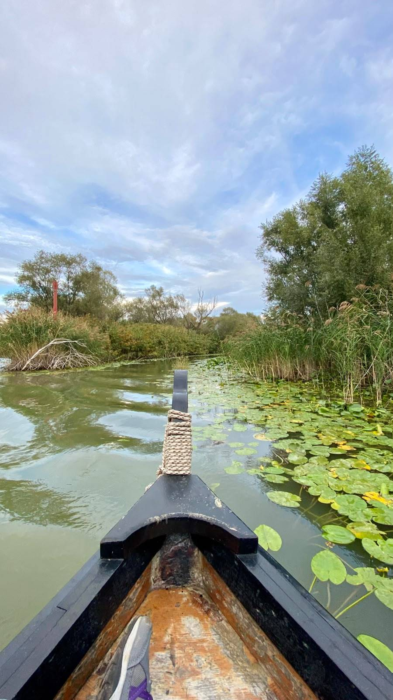
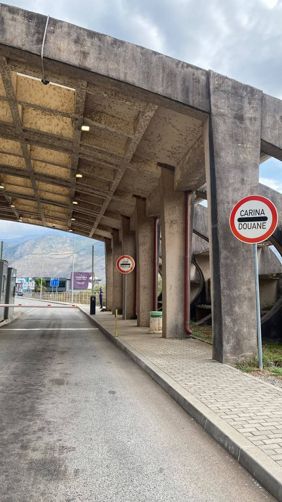
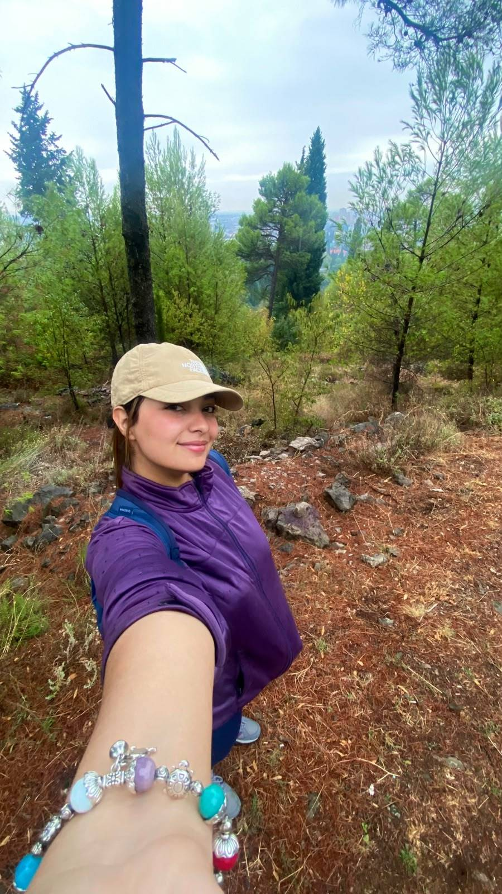

Michel prend la barre
12 octobre 2026

Au Kosovo, la route s'arrête et l'eau commence. Un batelier nous a proposé de nous emmener, en barque, jusqu'à la famille de Michel. Il a dit « une heure ». Nous avons compris « une demi-journée ». Michel, lui, a compris « tu peux t'allonger à l'avant », et il l'a fait avec un plaisir évident.
Il s'est installé sur la proue, comme une figure de proue, et a pris la pose. Il a pris ce rôle très au sérieux. Chaque nénuphar qu'on croisait recevait un signe de l'antenne, comme un hommage.
Le batelier, lui, ne disait presque rien, et il me regardait avec méfiance. Michel, qui parle le serbe, lui a demandé de ralentir. Il a ralenti. Pas pour nous : Michel voulait voir les nénuphars de plus près.
Au bout d'une heure, un piquet rouge est apparu au loin. Michel a déclaré que nous étions arrivés. Le batelier a dit que non. Michel avait raison, comme d'habitude, mais il n'a pas insisté.
Ce soir, nous dormons dans les roseaux. Je ne sais toujours pas si la famille de Michel est là. Une chose est sûre : mes baskets violettes ont pris l'eau, et Michel, lui, a enfin trouvé son élément.
Michel, diplomate sous un camion
11 octobre 2026

Michel et moi avons repris la route, avec un objectif qui nous tient à cœur : rencontrer sa famille. Le problème, c'est qu'elle se trouve de l'autre côté d'une frontière. Et Michel n'a pas de passeport. Je ne sais même pas si les limaces en ont.
Jusqu'à la frontière avec le Kosovo, nous avons voyagé à l'arrière d'une fourgonnette de paysans. Personne ne nous a posé de questions. Quand le conducteur a freiné brusquement, Michel et moi nous sommes regardés : nous étions arrivés à la frontière, impossible d'aller plus loin. Sans un mot, nous avons su que nous pensions la même chose : il allait falloir ruser !
Arrivés au poste, Michel a pris les choses en main. D'habitude, c'est moi qui négocie : je suis l'experte en communication. Mais là, Michel a pris le dessus. Il parle très bien le monténégrin et le serbe, et il a négocié avec une assurance que je ne lui connaissais pas. Il a même glissé un billet au douanier. Et quand le billet n'a pas suffi, il a menacé de continuer à parler. Je ne lui ai rien demandé. Il m'a juste fait un petit signe de l'antenne, comme pour dire : « laisse-moi faire ».
Mais sa technique n'a pas marché, et on s'est fait renvoyer comme des malpropres.
Au final, la traversée s'est faite sous un camion, ensemble, sans un bruit. Aucun de nous n'a osé dire qu'il avait peur.
Arrivés au Kosovo, nous avons continué, un peu en retard sur notre planning initial, mais en pleine forme : la sieste sous le camion était salvatrice. Sa famille nous attend. Michel a insisté pour que je porte ma plus belle casquette. Par contre, je ne sais pas si sa famille parle français.
Michel, mon premier habitant
10 octobre 2026

Deux jours que je suis installée dans la forêt, et toujours personne pour venir me saluer. Les ours ont décidé de ne pas se montrer, et il pleut toujours autant.
Ce matin, j'ai décidé de ne pas attendre. J'ai exploré le paillis, le nez au ras du sol, comme on fait quand on veut tout voir avant tout le monde. C'est là que je l'ai trouvé. Une limace. Grosse, noire, luisante, et d'un calme absolu.
Je l'ai saluée. Elle n'a pas répondu. Elle a continué son chemin, très lentement, sans jamais me regarder. J'ai trouvé ça un peu vexant, sur le coup.
Alors je l'ai touchée du bout du doigt, juste pour vérifier qu'elle était réelle. Elle l'était. Elle a fait une petite pause, comme pour réfléchir, puis elle a repris sa route. J'ai compris que c'était sa façon à elle de dire bonjour.
On est restées là un bon moment, moi à regarder, elle à avancer dans le même sens que sa propre patience. Je lui ai donné un nom : Michel. Il n'a pas protesté.
Ce qui m'a surprise, c'est qu'il avait l'air d'écouter quelque chose. Je me suis penchée : il y avait, à peine audible, une petite musique de The Weeknd qui sortait du paillis. Michel est un fan. Pas un fan discret, un fan qui ne parle pas, mais qui en pense beaucoup. Il avance au rythme de « Blinding Lights », lentement, mais avec conviction.
Michel ne m'a pas quittée depuis. Il me suivra tout au long du voyage, à son rythme, qui est le seul rythme qui vaille.
Trois ours, zéro rencontre
8 octobre 2026

Je suis arrivée au Monténégro. Jusqu'ici, tout va bien : le pays est là, la route aussi.
Mon objectif du jour était simple : rencontrer les habitants. Trois, de préférence. Un grand, un moyen et un petit. Des ours, pour être précise. J'avais prévu de leur dire bonjour, et même de leur demander leurs noms.
J'ai donc marché. Pendant des heures. J'ai regardé partout, derrière les arbres, sous les rochers, dans les buissons qui prétendaient cacher quelque chose. Rien. Pas un ours. Pas même une trace de patte un peu sérieuse.
La capitale, elle, était pourtant très accueillante. Dommage, parce que j'aurais bien voulu que les ours le soient aussi.
Alors j'ai pris une décision : puisque personne ne venait à moi, j'irais à la forêt. Là-bas, au moins, il y a des arbres, et les arbres ont l'air d'avoir du temps à perdre. J'ai posé mon sac, ajusté ma casquette, et j'ai attendu, en espérant que quelqu'un remarque ma présence.
Pour l'instant, personne ne s'est présenté. Mais l'air sent les pins, et je garde un œil ouvert. Un ours qui s'ennuie finit toujours par passer.